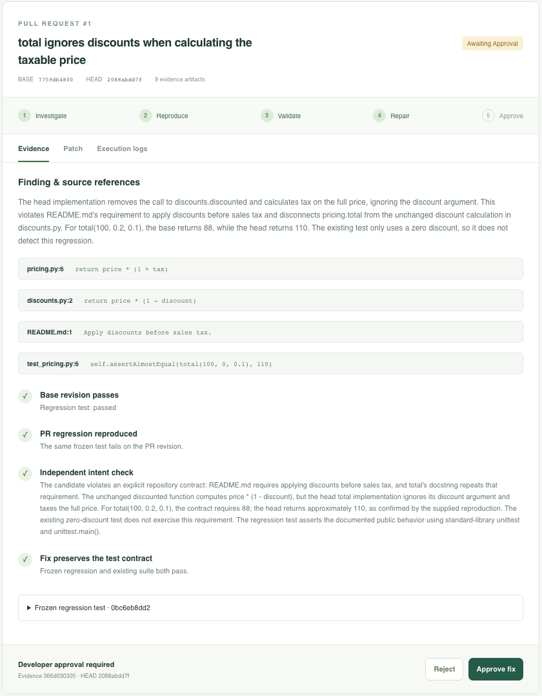
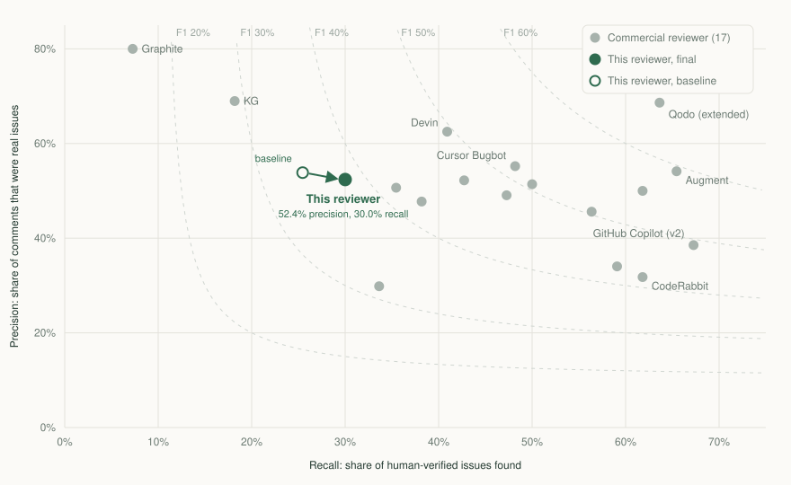

Evidence-grounded code review
Every finding cites a line.
Every bug gets a test.
AI code review for pull requests that reports only findings tied to exact changed lines. A self-hosted platform goes further: it proves a suspected regression with a test that passes on the base commit and fails on the PR, then proposes a fix that has to pass it.
Precision on 30 held-out PRs, 7th of 18 reviewers scored by the same judge
Seeded regressions reproduced with failing tests in a live run
Valid changes wrongly flagged in the same run
How it works
Two levels of proof.
The reviewer checks every finding against the source it cites before anything is posted. The platform adds executable proof: a regression has to be reproduced by a test before a fix is proposed, and a developer approves the result.
The reviewer
- Gather evidenceIndex the diff and pull related source, callers, tests and contracts from the PR's exact head revision.
- Review what mattersPrioritize security, correctness and broken repository contracts over style.
- Check every findingA separate pass keeps a finding only when the exact lines it cites support it.
- Publish oncePost one inline review, bound to the revision that was reviewed.
The platform
- FreezePin the base and head commits and the runner image for the whole review.
- ReproduceWrite a test that passes on base and fails on the PR, run in network-isolated, read-only containers.
- Validate intentAn independent agent checks the failure against the repository's documented behavior.
- RepairPropose a fix that must pass the frozen test and the existing suite.
- ApproveA developer approves or rejects, and the decision is recorded against the evidence and commit.
In the console
From a suspected regression to an approved fix.
Each review runs as a resumable Temporal workflow on PostgreSQL. The React console shows the evidence behind every step, so a developer can check the reasoning before approving anything.
- Source references for each claim, down to the line
- The same frozen test passing on base and failing on the PR
- An independent check of the intended behavior
- A fix that passes the regression test and the existing suite
- Approval bound to the evidence digest and head commit

Results
Measured against 17 commercial reviewers.
Martian's public code review benchmark has 50 pull requests from Sentry, Grafana, Keycloak, Discourse and Cal.com, with 173 human-verified issues. Before any change, the PRs were split into 20 for development and 30 held out. Every tool was re-scored by one judge, which agrees with the benchmark's own judge on 95.5% of decisions.

From 25.5% to 30.0%, using changes chosen on the 20 development PRs only.
Agreement with the benchmark's published judge across 2,941 decisions.
Proposed fixes passed contract tests the agents never saw.
Run it
Runs where you review.
Bring any OpenAI-compatible model endpoint. Each installation uses its own credentials and repository permissions, and the CLI and Action need no database or hosted service.
Terminal
Review a pull request or your local changes.
npm ci && npm run build npm run cli -- doctor npm run cli -- pr PR_URL
GitHub Action
Automatic reviews, a Run workflow button and a /review comment.
- uses: wuchris-ch/pr-review-agent-flue@v0.3.0
with:
model-key: ${{ secrets.MODEL_GATEWAY_API_KEY }}
model-url: ${{ secrets.MODEL_GATEWAY_BASE_URL }}
model: ${{ secrets.REVIEW_AGENT_MODEL }}
Review platform
A self-hosted GitHub App with the approval console, repository roles, quotas and an audit log.
GitHub Action setup ↗ · CLI and configuration ↗ · Architecture ↗